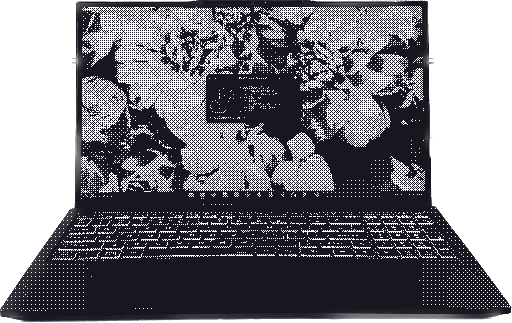
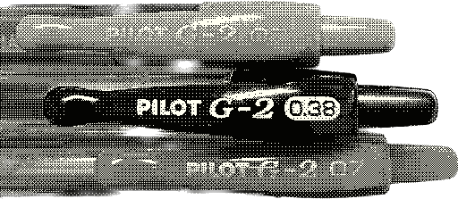
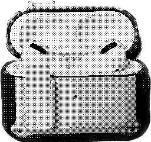
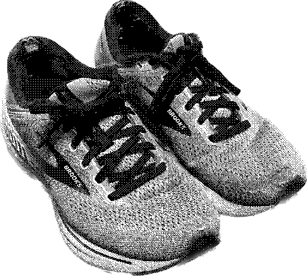
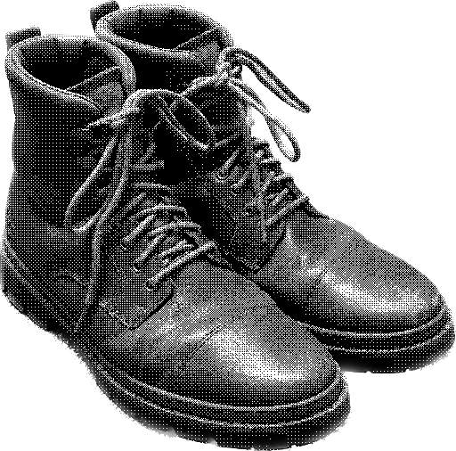

Stuff I use
Updated 2023-04-24
I always love seeing the technology, software, workflows and anything else that people use on a daily bases. I find that it points me towards new things to use in my own life that are tried and tested, as well as giving me a window into the way that person accomplishes their day-to-day activities.
Devices
Make sure to check out the devices page for summaries and notes on a number of devices I've owned or used!
Primary Laptop(s)

Sloth, my Dell Latitude 3380

Impenitence, my System76 Darter Pro (It's battery failed recently, so out of commission as a laptop for the time being)
Sacrificial Windows Machine

Vanity, my HP Pavilion 13 x360
Phone

Pride II, my iPhone 14 Pro
Tablet

Prejudice, my iPad 2
Stationery
Go-to Pen: The Pilot G2

I can't overstate my strongly-held opinions on the Pilot G2. For me, it's a pen that just works, and has the best writing feel out of anything I've tried.
Peripherals
Mouse: Razer Viper Mini

By all factors, I'd say the Razer Viper Mini is the perfect gaming mouse (for me). It's light enough, a great size, a shape that's very pleasant to hold, and only $30 to boot. What more could you ask for?
Keyboard: Keychron K3

I love this keyboard. It's a really nice blend of form and function, and I personally feel that the low profile Gateron Brown switches are the sweet spot in terms of tactility and travel. Unfortunately, I haven't been able to use it as much as I like recently now that I primarily use a laptop out and about, but my fingers certainly wish they were typing on the Keychron right now.
Headphones: Airpods Pro

The ability to cancel out noise or add in extra noise with my earbuds on demand has changed my game as a college student and traveler. I'd classify them as essential.
Footwear
Outdooring Boots: Timberland Chocorua Hiking Boots, Medium Brown

These boots can handle anything, and are extremely comfy. I've had them for over 3 years now, and they're just as sturdy as ever. I've added some snazzy orange laces for an extra bit of flair.
Sneakers: Brooks Running Adrenaline GTS 22, Alloy

These are the first running shoes I've bought that I can actually run (I'm flat footed and need a decent amount of support from my shoes). They unfortunately seem to be (not so) slowly wearing down.
Everyday Boots: Timberland Port Union Waterproof Insulated Boots, Brown

The Port Union is a really classy looking boot, and I was saddened to see it seems to be discontinued. These boots also have a bit of a heel, resulting in a really confident gait when wearing them.